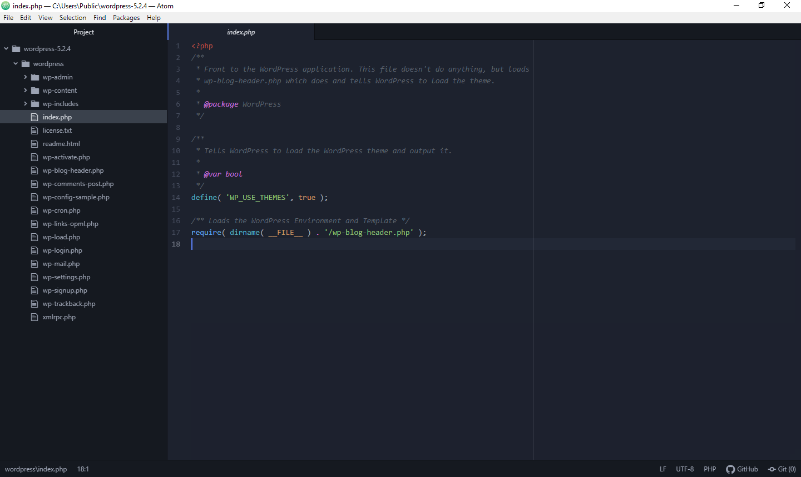
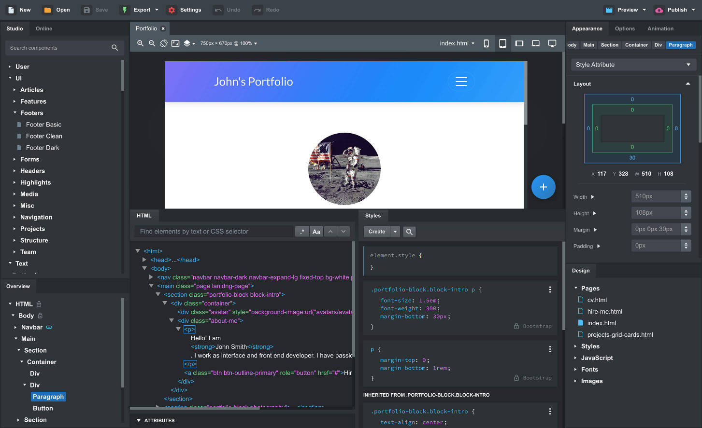
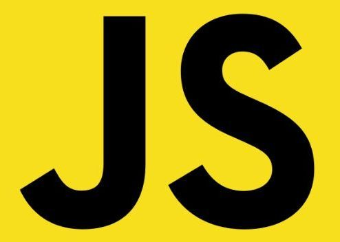
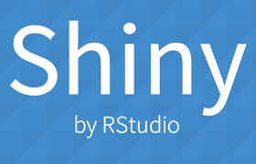
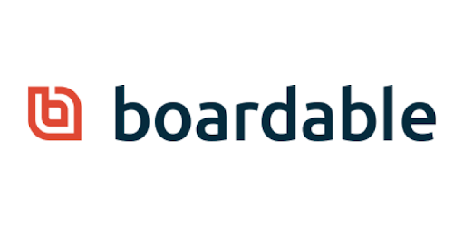

| # | Herramienta | Interfaz | Descripción | Ventajas |
|---|---|---|---|---|
| 1 | se utiliza para impulsar los reportajes de investigación en organizaciones de noticias de todos los tamaños, incluidos ProPublica , The Times of London , Foreign Policy , La Nación (Argentina) , The New York Times y St. Paul (MN) Pioneer Press . |
|
||
| 28 |  |
es la hoja de cálculo que siempre has necesitado. A quienes la usan por primera vez les resulta intuitiva y fácil de aprender. Mineros de datos profesionales y contadores apreciarán la amplia gama de funciones avanzadas. Wizards pueden guiarlo a través de la elección y el uso de una amplia gama de funciones de hoja de cálculo avanzados. O usted puede descargar plantillas desde el repositorio de plantillas de LibreOffice , para las soluciones de hoja de cálculo ya hechas. |
|
|
| 3 |  |
Un marco colaborativo y de código abierto para extraer los datos que necesita de los sitios web. |
|
|
| 4 |
WooRank |
 |
tiene controles en profundidad que le ayudarán a conocer el punto débil y optimizar su sitio web. En un nivel alto, verifica SEO, Mobile, Usabilidad, Tecnologías, Promocionar, Local, Medir, etc. Woorank es una de las herramientas de análisis de SEO más famosas disponibles. |
|
| 5 |  |
El IDE que Sun Microsystems lanzara allá por el año 2000 es uno de los más utilizados por la comunidad de desarrolladores en todo el mundo. Aunque en principio fue considerado para trabajar con Java, actualmente se ha adaptado a los tiempos y reúne una serie de características que lo hacen muy atractivo para utilizar con otros lenguajes. |
|
|
| 6 |  | Es el editor de texto desarrollado por Github. Estéticamente llama mucho la atención porque cuidan mucho los detalles, además de ser muy fácil de usar. Muy similar al Sublime Text, pero con la diferencia de que Atom es gratuito. |
|
|
| 7 |  | Originariamente utilizada por los desarrolladores de Twitter, Bootstrap fue toda una revolución, sobre todo para aquellos que no se atrevían a maquetar páginas web. Con este framework, |
|
|
| 8 | Este framework de Javascript es el más utilizado en el mundo. La característica principal de esta biblioteca es que permite cambiar el contenido de una página web sin necesidad de recargarla, mediante la manipulación del árbol DOM y peticiones AJAX. |
|
||
| 9 |

Javascript |
Es el lenguaje de programación del lado del cliente por antonomasia. Es un lenguaje orientado a objetos, débilmente tipado y dinámico. Desde junio de este año está disponible la versión ECMAScript 6. |
|
|
| 10 |
BackboneJS |
BackboneJS es una librería para el desarrollo de sitios web, principalmente usada para aplicaciones web con bastante interacción con el cliente, donde se hace un uso intensivo de Javascript, Ajax, etc |
|
|
| 11 | También conocido como PhoneGap, es un framework para el desarrollo de aplicaciones móviles. Actualmente sirve como herramienta, junto a Angular, de otras librerías como Ionic . |
|
||
| 12 | Uno de los frameworks más demandados en la actualidad. Trabaja en la parte cliente de una aplicación, respeta el paradigma MVC y permite crear Single Web Applications (aplicaciones web que no necesitan ser recargadas). Detrás de Angular está el gigante Google. |
|
||
| 13 |
Google Data Studio |
es una herramienta gratuita que convierte sus datos en informes y paneles claros, totalmente personalizables y fáciles de consultar y compartir. |
|
|
| 14 |

Shiny from RStudio (R) |
Es una herramienta para crear fácilmente aplicaciones web interactivas (apps) que permiten a los usuarios interactuar con sus datos sin tener que manipular el código. No hace falta conocimiento de HTML o JavaScript, solo conocer R. |
|
|
| 15 |
NetSuite |
Vincula todos los pasos de un negocio minorista de múltiples canales y ubicaciones. Esta solución integral unifica las operaciones de back-end de comercio electrónico, POS y gestión de pedidos. SuiteCommerce permite a los minoristas ofrecer a sus clientes un viaje personalizado y sin interrupciones en todos los puntos de contacto. Con la capacidad de admitir sitios de múltiples marcas, países, monedas e idiomas desde una única plataforma basada en la nube, su empresa tendrá la capacidad de impulsar la innovación y el crecimiento. |
|
|
| 16 |
ShopKeep |
odo lo que hace ShopKeep es compatible con empresas independientes en crecimiento. ShopKeep, fundado por empresarios exitosos, proporciona un sistema de punto de venta de iPad intuitivo y seguro con software POS, que permite a los comerciantes ejecutar negocios más inteligentes optimizando el personal, ajustando el inventario y accediendo a informes de ventas e información de ventas. Basado en la plataforma. ShopKeep tiene más de 23.000 clientes, un equipo de atención al cliente galardonado está disponible las 24 horas del día, los 7 días de la semana y brinda un sólido soporte. |
|
|
| 17 | AIMsi no sólo proporciona a los minoristas una forma de administrar el inventario, los clientes y las ventas, sino que también proporciona módulos complementarios completamente integrados, como cuentas por pagar y libro mayor, órdenes de compra, reparación y servicio, programación de cursos / citas y tarifas de contabilidad, a corto plazo. |
|
||
| 18 |
WooPOS |
WooPOS es un sistema de gestión de tiendas minoristas que puede ayudarlo a administrar todos los aspectos de su negocio minorista. Desde la gestión de inventario hasta el análisis de datos, el procesamiento de ventas y la gestión de personal, el software POS basado en Windows le ayudará a gestionar tiendas físicas de un solo sitio o de varios sitios y tiendas en línea WooCommerce. |
|
|
| 19 |
Bitrix24 |
Es un completo software empresarial en español para la gestión y gestión de inventarios e inventarios, compras, ventas, clientes y proveedores, cuentas corrientes y facturas. |
|
|
| 20 |
Alegra |
Es un software en la nube que puede ayudar a las pequeñas y medianas empresas a administrar la contabilidad, la facturación y la administración. Con Alegra, puede crear facturas, registrar pagos, mantener registros de clientes y administrar cuentas bancarias y muchas otras aplicaciones de manera rápida, fácil y segura. |
|
|
| 21 |
cChic v1.3 |
Con este software práctico y sencillo, podrá realizar un seguimiento de los gastos y el reemplazo de la caja chica. Le permite agregar datos como fecha, monto, nombre del beneficiario, número de comprobante y comentarios relacionados. |
|
|
| 22 |
Prestacob v1.1. |
Prestacob es un programa que le permite controlar los préstamos y los reembolsos correspondientes. Prestacob es una aplicación gratuita solo disponible para Windows, forma parte de la categoría "Negocios y Productividad" de la subcategoría "Finanzas", creada por Paez Information Systems |
|
|
| 23 |

Secomat v1.1.1 |
Boardable es un software de gestión de conferencias utilizado por empresas sin ánimo de lucro y con ánimo de lucro para gestionar reuniones de juntas y comités. Utilice la herramienta de planificación para ajustar el calendario de asistentes a la reunión y luego ejecute automáticamente las invitaciones y recordatorios. Crea y comparte agendas dinámicas con marcas privadas. Almacene y comparta documentos de forma segura. Boardable es fácil de usar, tiene un precio razonable y todas las cuentas comienzan con una prueba de 30 días sin riesgos. Además, Boardable se integra con el correo electrónico, los servicios para compartir archivos y los calendarios. |
|
|
| 24 |
OnBoard |
OnBoard ha recibido el premio "Facilidad de uso" de Capterra en la categoría de software de gestión de conferencias Se trata de una solución de gestión de conferencias virtuales con un conjunto completo de herramientas que pueden utilizarse para tomar decisiones más inteligentes en tiempo real y de forma remota. Necesita más que nunca un software de gestión de líderes y juntas completo, seguro y fácil de usar. Simplifique el proceso de preparación de la reunión y proporcione a sus líderes información oportuna y precisa en todos los dispositivos. Con función de uso remoto; listo para usar con confianza en cualquier momento y lugar. |
|
|
| 25 |
Diligent Boards |
El tablero diligente es la solución líder en el mundo para crear y distribuir libros y materiales de manera segura y colaborar en reuniones. Más de 140.000 ejecutivos y miembros de la junta confían en el diligente software de secretaria comercial para administrar una junta más eficiente. En Diligent, el producto Boards for Boards se creó con una seguridad a prueba de balas y una simplicidad incomparable, y el producto recibió un galardonado soporte de nivel de administrador las 24 horas durante todo el año. |
|